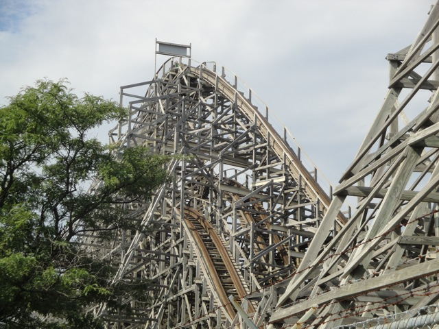
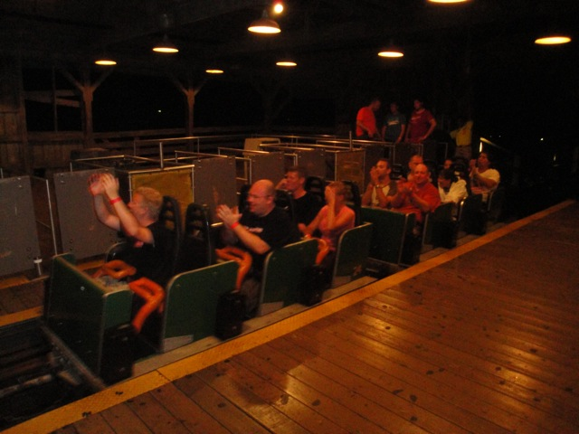
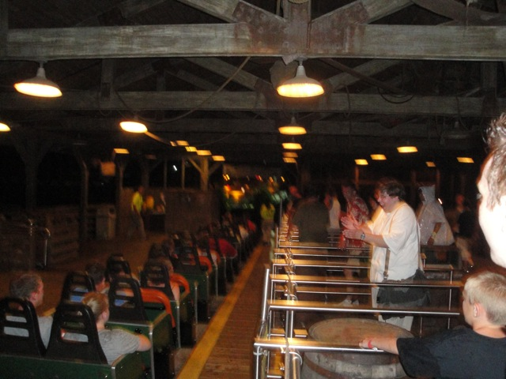
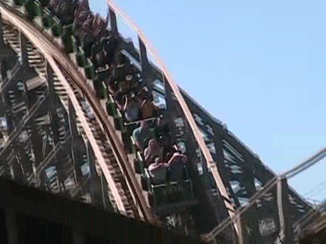
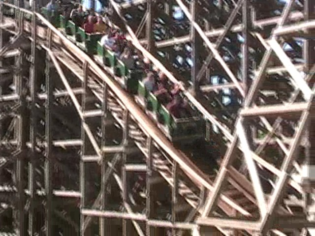
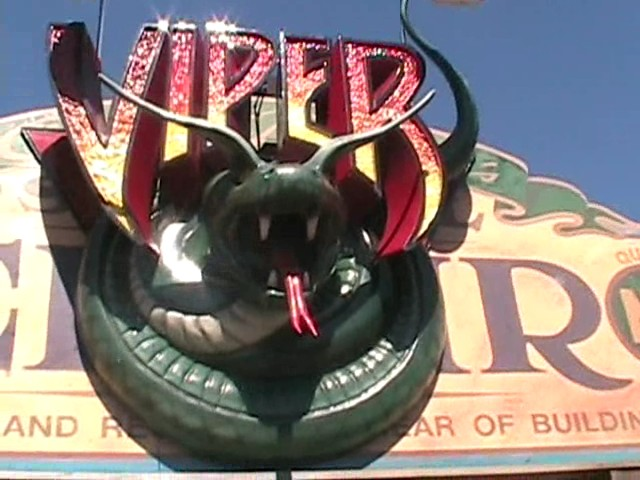

| |
Viper Review

We're here at Six Flags Great America. Today's ride we'll be reviewing for you is Viper. The other wooden coaster at Six Flags Great America. The one you can't coaster race on. Anyways, you hop in the cars, pull down the orange lap bar, and off you go!!! You roll through a nice turn before heading up the lifthill. While climbing the lifthill, you get a good view of Raging Bull and of Six Flags Hurricane Harbor. As we are about to go over the top of the lifthill, we notice that this ride looks eerily familiar to us. Oh yeah, it's yet another Cyclone Clone. Well, ok. I wouldn't exactly call it a Cyclone Clone as there are a few differences between Viper and the Coney Island Cyclone. But still, you don't expect too much. But then you go down the first drop. It's a really fun first drop that provides us with many thrills and plenty of speed. And then you rise up and head into the turnaround. At this point, you notice something strange about this ride. It's actually smooth. This ride is actually smooth as glass. Something that is not common in Cyclone Clones. We then start to drop as we fly straight into the big wooden mess. Then we rise up into a hill. More good news. This ride actually has some great airtime right here. In the front, it's crazy ejector air, but in the back, it's sweet floater air. Nice. Anyways, you then head into this big turnaround. Which even though it's smooth as glass, still manages to satisfy the lateral urges we all have. And now comes the holy grail of Viper. The Double Dip. After this turnaround, Viper levels out before heading down the second drop, leaving for everyone in the back some sick sick sick airtime. It's awesome. It's really f*cking awesome. Then after that awesome moment, we head into another airtime hill that really delivers some great airtime. And since this hill is underneath the ride's structure, we also get some nice headchoppers to go with our airtime. How delightful. Still underneath a big pile of wood, Viper manages to go through another turn to satisfy our lateral cravings and all while being as smooth as silk and glass put together. We then get another airtime hill with some laterals thrown in to give us a very delightful airtime lateral pop that just makes us all squeal with joy. We quickly pop out of that wooden mess for a second to give a quick open pop of airtime before heading back under the structure to continue with another turnaround. The turnaround while lacking in laterals is still fun. After some weird S track to avoid hitting the track, we go through another airtime hill for some final goodness. Then you head into a really tight to finish off with some great laterals as you head straight into the brake run. While this may just look like a small pathetic Cyclone Knock Off next to a huge hyper coaster, I'd give this coaster a go. It is fantastic and filled with crazy airtime, insane laterals, high speeds, and all while being as smooth as a baby's bottom. Plus, it's not trimmed to death like a certain hyper coaster next door. It's one of my favorite rides and I'm sure it'll be one of yours as well.
8/10
Location: Six Flags Great America
Opened: 1995
Built by: Philadelphia Toboggan Coasters
Last Ridden: August 13, 2010
Viper Photos






Home
|